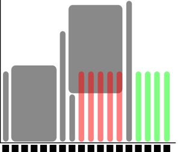
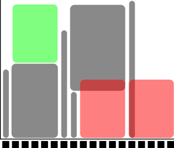

Submitting jobs
Slurm, sbatch, the job queue
Problem: 1000 users, 500 nodes, 10k cores
Need a queue:

Easiest to schedule single-threaded, short jobs


Jobs
Job = what happens during booked time
Described in a Bash script file
Slurm parameters
Load software modules
Move around file system
Run programs
Collect output
… and more
Slurm parameters
1 mandatory setting for jobs:
Which compute project? (-A)
3 settings you really should set:
Less than one node? (-p)
How many cores? (-n)
How long at most? (-t)
If in doubt:
-p core
-n 1
-t 10-00:00:00
Where should it run? (-p node or -p core)
Use a whole node or just part of it?
1 node = 20 cores (16 on Bianca & Snowy)
1 hour walltime = 20 core hours = expensive -Waste of resources unless you have a parallel program or need all the memory
Default value: core
Most important slurm flags
Type of queue -p
How long is the job? -t
How long is it? (-t)
Always overestimate with ~50%
Jobs killed when timelimit reached
Only charged for time used
-t = time (hh:mm:ss)
78:00:00 or 3-6:00:00
Default value: 7-00:00:00
Efficient jobs
Use your booked cores or memory
(at least 50%)
Runtime longer than 1 hour
Combine shorter jobs
Ask UPPMAX support for help!
Interactive jobs
Most work is most effective as submitted jobs, but e.g. development needs responsiveness
Interactive jobs are high-priority but limited in -n and -t
Quickly give you a job and logs you in to the compute node
Require same Slurm parameters as other jobs
Try it:
$ interactive -A snic2021-22-606 -p core -n 1 -t 10:00
Which node are you on?
Logout with Ctrl-D or logout
A simple job script template
#!/bin/bash -l
# tell it is bash language and -l is for starting a session with a "clean environment, e.g. with no modules loaded and paths reset"
#SBATCH -A snic2021-22-606 # Project name
#SBATCH -p devcore # Asking for cores (for test jobs and as opposed to multiple nodes)
#SBATCH -n 1 # Number of cores
#SBATCH -t 00:10:00 # Ten minutes
#SBATCH -J Template_script # Name of the job
# go to some directory
cd /proj/introtouppmax/bjornc
pwd
# load software modules
module load bioinfo-tools
module list
# do something
echo Hello world!
Other Slurm tools
Squeue — quick info about jobs in queue
Jobinfo — detailed info about jobs
Finishedjobinfo — summary of finished jobs
Jobstats — efficiency of booked resources